За полазнике
За тренере
За полазнике
За тренере
Модул 13: Извори поузданих информација
Опис модула
Главни циљ овог модула је да упозна полазнике са изворима поузданих информација, како би могли да препознају и разликују различите категорије и врсте извора информација. Секундарни циљ је да усмери тренере који желе да користе садржај овог модула за обуку полазника.
У складу са овим циљевима, у модулу су обрађене дефиниције главних категорија и врста извора информација, примери извора информација који се односе на вести и новинарство, а садржај модула укључује и смерницама о томе како да се предмет предаје.
Полазници који успешно заврше овај модул моћи ће да:
- идентификују и разликују различите категорије извора информација (нпр. примарни, секундарни или терцијарни извори)
- идентификују и разликују различите врсте извора информација (нпр. референсни извори, књиге, серијске публикације, базе података)
- буду упознати са појединим примерима извора информација везаних за вести и новинарство.
Поред тога, тренери који успешно заврше овај модул, моћи ће да покажу разумевање смерница за подучавање ове теме.
Структура модула
Овај модул се састоји из следећих целина:
- Циљ, опис садржаја и исходи учења
- Структурa модула
- Смернице за полазнике
- Смернице за тренере (како се припремити, методе које треба користити и савети за тренере)
- Садржај (материјал за учење и вежбање)
- Квиз
- Референце (цитирани извори, препоручени извори и видео-записи)
Главни циљеви модула, опис садржаја и исходи учења објашњени су у делу Опис модула. Садржај обухвата све потребне материјале за учење и вежбе везане за садржај. Квиз укључује питања са вишеструким избором како како би полазници тестирали свој напредак. Одељак Референце обухвата списак извора цитираних у садржају модула и листу додатних извора и видео-записа који се препоручују за читање и гледање како би се проширило знање о овој теми. Смернице за полазнике укључују упутства и сугестије за полазнике. Смернице за тренере воде тренере кроз различите фазе обуке и дају савете који би могли да буду корисни током предавања предмета.
Смернице за полазнике
Од полазника се очекује да прочитају текст, погледају препоручене видео-записе и ураде вежбања. Они могу да консултују предложене ресурсе за додатне информације. Након проучавања садржаја, полазницима се препоручује да ураде квиз како би проценили свој напредак.
Смернице за тренере
Смернице за тренере укључују сугестије и савете о томе како да користе садржај овог модула за обуку полазника. Уколико је потребно, могу ревидирати материјал за учење.
Припрема
Припремите презентацију (Пауерпоинт/Прези/Канва) која је обогаћена визуелним материјалима. Предлажемо да примере извора (нпр. Data Turkey, LETA, LURSOFT "Laikrakstu bibliotēka") и вежбе прилагодите питањима која су добро позната циљној групи. Овакав приступ ће вам помоћи да задржите пажњу полазника. Током курса, такође се препоручује употреба различитих извора у реалном времену.
Почетак
Како бисте увели полазнике у тему, на почетку можете користити кратак квиз (3 до 5 питања) направљен у Кахуту или им поставити питања путем Ментиметар апликације. Поменути квиз и питалице се могу користити као мотивационо средство и средство за проверу постојећег знања полазника о овој теми. Питања, на пример, могу бити:
- Шта значи примарни извор?
- Можете ли да наведете пример референсног извора?
- Шта је база података?
- Да ли је могуће приступити главним светским вестима прикупљеним из конвенционалних извора путем једног извора?
Методологија
Током обуке могу се комбиновати различите наставне методе:
- Предавања
- Рад у групама
- Индивидулани рад
- Самопроцењивање
Савети за тренере
Загревање
Ефикасан начин укључивања полазника и утврђивања заједничких очекивања о томе шта ће научити јесте постављање неколико прелиминарних питања о теми (извори поузданих информација). Полазницима, на пример, можете поставити следећа питања: Шта је секундарни извор? Где могу да пронађем историјске новине? Која је разлика између веб-извора и база података? Активност се може спровести на следећи начин:
- припремитe различите теме за претрагу које захтевају коришћење различитих врста извора (нпр. референсне изворе, базе података, књиге, серијске публикације, стандарде)
- замолите учеснике да изаберу одговарајуће и поуздане изворе за ове теме
- замолите учеснике да поделе и објасне своје изборе са другим учесницима
- замолите учеснике да користе изворе које су сами одабрали, како би одговорили на питања истраживања
- питајте учеснике да ли су задовољни резултатима
- питајте учеснике да ли сматрају да су ти резултати поуздани
Након активности, уверите се да полазници разумеју да постоји много различитих врста извора, да се различите врсте извора фокусирају на различите врсте информација и да нису сви извори поуздани.
Представљање циља лекције
Циљ лекције треба да буде јасан (да се представе категорије и врсте извора поузданих иформација). Након питања за загревање, лакше ћете разјаснити циљеве.
Представљање садржаја лекције
Приликом представљања садржаја, водите рачуна о интеракцији са полазницима и подстакните их на активно учешће.
Пре
- Пре часа припремите питања за вежбање која ћете задати ученсицима, користећи различите изворе (одредите питања и најприкладније изворе)
- Пре часа одлучите који извори ће се користити за вежбање
Током
- На почетку часа питајте учеснике:
- Шта је поуздана информација?
- Зашто су важни извори поузданих информација?
- Шта знају о категоријама и врстама извора информација?
- Какве би могле бити последице некоришћења поузданих извора?
- Који су најприкладнији и најпоузданији извори које треба користити да бисте одговорили на питања из вежбања?
- Приликом представљања категорија и врста извора информација:
- Замолите учеснике да дају примере информационих потреба које можемо да применимо на ове изворе.
- Прокоментаришите њихове примере.
Након
- Размотрите и елаборирајте важност коришћења поузданих извора за прикупљање и евалуацију информација.
- Уверите се да учесници разумеју да постоје различити извори поузданих информација, од којих сви захтевају евалуацију.
- Обезбедите полазницима нове теме за претрагу које ће моћи да истраже користећи изворе објашњене у овом модулу.
Сугестије
- Обавезно поткрепите своје часове практичним примерима и вежбама.
- Док представљате примере извора, изаберите изворе специфичне за земљу или полазнике.
- Када бирате примере, уверите се да се добро уклапају у дефиницију категорије и врсте извора. Одређивање да ли је извор примарни, секундарни или терцијални може бити тешко.
Закључак
Направите кратак резиме лекције и поставите неколико питања која ће вам помоћи да нагласите најважнији садржај и вежбања која бисте желели да истакнете. Питања могу бити:
- Зашто је битно познавање различитих врста извора?
- Шта би се могло догодити ако не користимо „поуздане“ изворе?
- Да ли су полазници били у могућности да пронађу одговоре на сваку од тема претраживања на интернету?
У “свету пост-истине”, познавање различитих извора поузданих информација омогућиће учесницима да темељно и ефикасно задовоље информационе потребе и заштитиће их од обмањивања лажним информацијама.
Садржај: Извори поузданих информација
Увод
У данашње време, као резултат развоја информационих и комуникационих технологија, све већа количина информација и разноврсност извора који долазе са њима постали су један од највећих проблема у погледу приступа тачним и поузданим информацијама. У данашњем информационом екосистему веома је важно да они који креирају или доприносе производњи садржаја (као што су аутор, уредник, сарадник, издавач) буду ауторитети у тој теми или области, и да су представљене информације и документи тачни, објективни и потпуни, другим речима: поуздани.
Информације се производе и објављују углавном у електронским медијима. Свако може веома лако и брзо да производи и дели садржај, а приступ овом садржају је веома лак путем мрежа. Из ових разлога, приступ поузданим изворима је од суштинске важности, јер како се и садржај и број ресурса повећавају, постаје све сложеније и теже одабрати и проценити релевантне и тачне информације. Различити концепти који улазе у наше животе, као што су лажне информације, дезинформације, мисинформације, лажне вести и информацоно загађење такође су резултат постојећег информационог екосистема.
Веома је важно да они који креирају садржај или доприносе производњи садржаја буду ауторитети у тој теми или области, а да су информације и документи који се износе тачни, објективни и потпуни, другим речима, поуздани. Данас не би било погрешно рећи да је понашање особе у потрази за информацијама углавном у форми претраживања интернета. У овим окружењима (мрежама) није лако пронаћи “поуздане информације”, или изабрати поуздане информације међу информацијама или изворима информација којима се приступа. Извор информација који се бира, односно примењује је од велике важности, како би се информационе потребе адекватно и ефикасно задовољиле, јер валидност и поузданост информација којима се приступа зависи од извора. Истовремено, извор који ће се консултовати мења се у складу са потребним информацијама. На пример, општи извори информација ће бити кориснији; међутим, ако су нам потребне детаљније или специјализоване информације, извори специфични за предмет могу бити кориснији. Из тог разлога је од велике важности да се разумеју различите врсте извора.
Извори информација могу се категоризовати на различите начине: на основу њихових својстава приступа (примарни или секундарни), садржаја (научни или популарни), облика (штампани или нештампани), формата публикација (периодични или непериодични), произвођача (владине публикације, корпоративне публикације, стручне публикације или сиве публикације), времена (актуелни или историјски) итд.
У овом одељку биће објашњене различите врсте извора информација и дати примери.
Категорије извора информација
Извори информација су развијали и мењали своје облике од прошлости до данас. Према различитим начинима обраде информационих садржаја, извори информација се могу категорисати као примарни, секундарни и терцијарни извори информација. Понекад су извори информација категорисани само као примарни и секундарни извори.
Примарни извори информација
“Примарни извори су материјали у различитим форматима, настали у време проучавања, који служе као оригинални докази који документују временски период, догађај, људе, идеју или рад. Примарни извори могу бити штампани материјали (као што су књиге и ефемерна дела), рукописни/архивски материјали (као што су дневници или књиге), аудио/визуелни материјали (као што су снимци или филмови), артефакти (као што су одећа или личне ствари) или материјали који су оригинално направљени у дигиталном облику (као што су мејлови или дигиталне фотографије)” (ACRL RBMS-SAA, 2018, стр. 11-12).
Примери примарних извора информација су: академски часописи, архивски материјал, књиге, зборници конференција, дисертације и тезе, владина документа, спецификације патената, узорци производа, научни и технолошки извештаји, технолошки стандарди, итд.
Примарни извори који садрже оригиналне, односно информације из прве руке, су важни извори за истраживаче. Они су такође индикатори раста или развоја неке дисциплине. Коришћење примарних извора можда неће бити лако, јер формат извора може бити јединствен и непознат кориснику (ACRL RBMS-SAA, 2018). Секундарни извори (извори који коментаришу примарне и/или друге секундарне изворе) (ACRL RBMS-SAA, 2018, стр. 13) помажу при коришћењу примарних извора.
Секундарни извори информација
Секундарни извори се разликују од примарних тако што обрађују примарне изворе кроз критику, коментар или анализу (ACRL RBMS-SAA, 2018, стр. 13).
Секундарни извори информација:
- описују, објашњавају, анализирају или вреднују садржај примарних извора информација,
- дискутују или критикују доказе, оправдања или разлоге дате у примарним изворима информација,
- обликују садржаје примарних извора према потребама (Chatterjee, 2017, стр. 11).
Између осталог, секундарни извори информација укључују: апстракте, библиографије, каталоге, водиче, индексе, профиле и извештаје на различите теме (тематске извештаје).
Терцијарни извори информација
Ове врсте извора се заснивају на примарним и секундарним изворима информација. Терцијарни извори информација састоје се од резултата истраживања који су генерисани свеобухватном анализом и синтезом примарних и секундарних извора. Као примери терцијарних извора могу се навести годишњи коментари, водичи, приручници, извештаји, прегледи и резимеи специфичних тема или сврха (Li, 2014).
Врсте извора информација
Постоје различите врсте извора информација. Обим и дубина информација мењају се у зависности од врсте извора. Обим се односи на ширину предмета или теме. Извор који има широк обим покрива бројне теме, док извор уског опсега може покрити само један специфичан аспект теме. Дубина је количина информација о некој теми која је обухваћена извором (Lanning, 2012, стр. 13). Научни извори информација, различитог обима и дубине, углавном обухватају следеће врсте:
Референсни извори
Ови извори “су дизајнирани да вам донесу брзе чињенице или дају кратак преглед теме”. Они могу пружити основно разумевање теме и тако могу бити од велике помоћи за истраживање. Представљају веома драгоцене изворе на почетку претраге. Референсни извори су увек секундарни извори информација. Они могу укључивати популарне или научне информације, актуелне или историјске информације и генерално их пише или уређује више особа. Имају веома широк обим и за њихово креирање је потребно више времена у односу на друге врстае извора (Lanning, 2012, стр. 14).
Алманах
Алманах је “годишњи зборник корисних података и статистика у вези са земљама, личностима, догађајима, темама, итд.” (Welsh & Wright, 2010, стр. 41).
Пример: World Almanac and Book of Facts
|
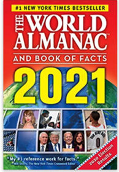 |
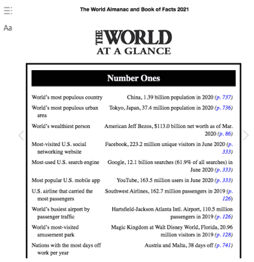 |
Извор: www.amazon.com
Библиографија
Библиографија представља “списак дела, докумената и/или библиографских јединица, који су на одређени начин међусобно повезане (нпр. од датог аутора, на дату тему, или објављених на датом месту), и који се разликује од каталога по томе што његов садржај није ограничен на фондове једне збирке, библиотеке или групе библиотека” (Levine-Clark & Carter, 2013, стр. 29). Помаже корисницима да идентификују, лоцирају или одаберу материјал.
Биографија
Биографије укључују информације о животу особе. Ове информације могу покривати било шта, попут образовања, датума рођења или каријере (Markey, 2019, стр. 75-76).
Пример: Marquis Who’s Who
Речник
Језички речник је “колекција уноса за акрониме, властите именице, фразе или речи који дају дефиниције, етимологију, еквиваленте на страном језику, граматику, ортографију, изговоре, регионализме, синониме, употребу, визуелне слике и/или исписане форме” (Markey, 2019, стр. 372). Стручни речник је “колекција уноса за концепте, догађаје, објекте и свеобухватне теме у дисциплини, предмету или области проучавања, заједно са дефиницијама и кратким објашњењима” (Markey, 2019, стр. 368). Поједини стручни речници радије користе речи енциклопедија, водич или референсни водич у својим насловима уместо термина речник (Markey, 2019, стр. 78).
Пример: The New Shorter Oxford English Dictionary
"Vintage German Dictionary Page" аутор HA! Designs - Artbyheather доступно под лиценцом CC BY-NC-ND 2.0. |
"The New Shorter Oxford English Dictionary; The New Oxford Thesaurus of English; The Macquarie Dictionary" by warwick_carter доступно под лиценцом CC BY-NC 2.0. |
Именици
Именици дају контакт информације особа или организација. Они такође дају неке друге податке као што су старост, занимање за особе и датум оснивања, број запослених или контакт особу за организацију (Markey, 2019, стр. 368).
Пример: Foundations Directory, Europa World of Learning
Енциклопедија
Енциклопедија је збирка записа о различитим темама у оквиру дисциплине или теме. Ови уноси дају основне информације, дефиниције, објашњења о сродним темама са листом референци за даље читање (Welsh & Wright, 2010, стр. 43, Markey, 2019, стр. 80). Они пружају задовољавајуће и основне информације о кључним аспектима теме или концепта.
Пример: Encyclopaedia Britannica
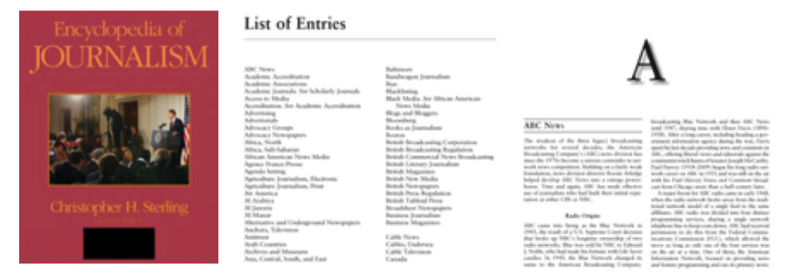
Извор: Sage Publication
Приручник
Приручник укључује критичне информације, организоване тако да омогућавају брзо лоцирање чињеница које би могле бити потребне за одређену област (Levine-Clark & Carter, 2013, стр. 124).
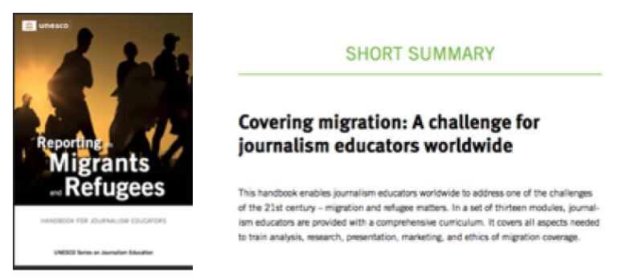
Годишњак
Годишњак је годишња публикација која пружа кратке, актуелне информације о земљи, организацији, дисциплини или теми.
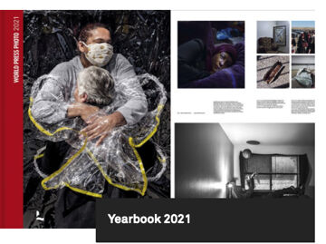
Source: https://www.worldpressphoto.org/
Књиге
Књиге поседују већу дубину и ужи обим података од референсних извора. Оне детаљно покривају своју тему, дајући oпширније информације од референсних извора. Могу бити примарни или секундарни, популарни или научни, историјски или актуелни извори информација. Књиге могу бити уџбеници или монографије. Уџбеници обухватају основне принципе предмета на језику и облику који је погодан за ученике одговарајућег образовног нивоа. Обично садрже информације корисне широј јавности, а не садрже нове теорије које је изложио аутор (Chatterjee, 2017, стр. 18). Монографија је “систематска и потпуна расправа о одређеној теми” (Levine-Clark & Carter, 2013, стр. 169). Монографије дају више детаља, укључујући детаљне информације, дискусију и подробно објашњење једне теме.
Серијске публикације
Публикација у било ком медијуму која се издаје у узастопним деловима који носе нумеричке или хронолошке ознаке и постоји намера да се њено издавање настави на неодређено време. Серијске публикације укључују периодичне публикације, новине и годишњаке (извештаји, годишњаци, итд.); часописe, мемоарe, зборникe, итд. друштава; и нумерисане монографске серије (Levine-Clark & Carter, 2013, стр. 229).
Журнали
Периодични часопис, посебно онај који садржи научне чланке и/или дистрибуира актуелне информације о истраживању и развоју у одређеној области (Levine-Clark & Carter, 2013, стр. 144).
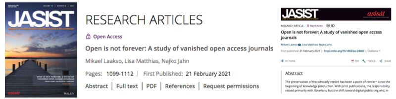
Магазини
Периодични часопис за општу публику који садржи чланке о различитим темама различитих аутора (Levine-Clark & Carter, 2013, стр. 160). Магазини се углавном објављују за одређену публику. Они нису писани академским стилом и обично не садрже научне чланке (Lanning, 2012, стр. 16).
Пример: New Republic, Washington Monthly, New Scientist (Магазин New Scientist покрива недељна, недавна дешавања у међународној науци и технологији за општу публику која говори енглески језик, и укључује листе послова у релевантним областима)
Билтен
Публикација која се састоји од једног или неколико штампаних листова који садрже вести или информације које су од интереса углавном посебној групи (Levine-Clark & Carter, 2013, стр.174).
Пример: WHO Newsletter.
Новине
“Периодична публикација која се издаје у наведеним, честим интервалима (обично дневним, седмичним или полунедељним), који садржи вести, мишљења, рекламе и друге садржаје од актуелног, често локалног, интереса” (Levine-Clark & Carter, 2013, стр. 175). Обично се фокусирају на актуелне догађаје, за ширу јавност или популарну публику. Чланци и извештаји су обично кратки, али су корисни за тражење информација о политици, пословним активностима, актуелним дешавањима, економској статистици, међународним пословима, новинским извештајима, технолошком напретку и др. Новине су масовни медији који усмеравају и утичу на јавно мњење у данашњем информационом друштву (Li, 2014, стр. 107; Lanning, 2012).
Базе података
База података је начин за структурисање, складиштење и брз приступ великим количинама информација електронским путем. Кључне функције базе података су: структура (организован начин складиштења информација), ефикасност (без понављања) и брз приступ (могућност претраживања и преузимања материјала из базе података што је брже могуће) (Bell, 2015, стр.1). Улоге база података могу варирати, као што је приступ објављеној литератури било које дисциплине; приступ пуном енциклопедијском низу објављене литературе у оквиру дисциплине; или приступ одређеном жанру или форми, као што су чланци у часописима, дисертације, владине публикације или новине (Markey, 2019, стр. 64).
Базе података се могу класификовати на различите начине: типу извора (стварни извор или сурогат); жанру (текст, медији, нумерички и просторни подаци или њихова комбинација); принципу селекције (садржај специфичан за форму, садржај специфичан за предмет или енциклопедијски садржај); форми (референтна база података, истраживачка база података); или уредничка контрола, итд. (Markey, 2019, стр. 65).
Библиографске базе података су сурогат базе података. Они не укључују стварне изворе, али обухватају сажете верзије стварних извора. Записи библиографске базе података дају опис одређеног документа, који се обично може пронаћи према аутору, наслову, предметној одредници (дескриптору) или кључним речима; и обично садрже цитате, апстракте или сажетке докумената (Welsh & Wright, 2010, стр. 71).
Library, Information Science & Technology Abstracts је пример библиографске базе података. Омогућава индексирање и апстраховање стотина кључних часописа, књига и истраживачких извештаја.
Базе података у пуном тексту пружају комплетан (пун) текст докумената и испоручују га у различитим форматима, као што су HTML, PDF.
Newspaper Source Plus је пример базе података у пуном тексту. Омогућава приступ дигиталној колекцији најважнијих светских вести у виду пуног текста. Укључује милионе чланака из новина, вести и новинских часописа. Поред тога, нуди телевизијске и радио транскрипте и стална дневна ажурирања из популарних извора вести (EBSCO, 2021a).
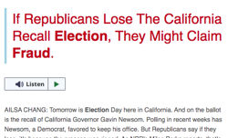
Извор: EBSCO, 2021
Цитатне базе података садрже информације које се односе и на цитирана документа и/или на документе где се цитирају.
Web of Science и Scopus су примери оваквих база података.
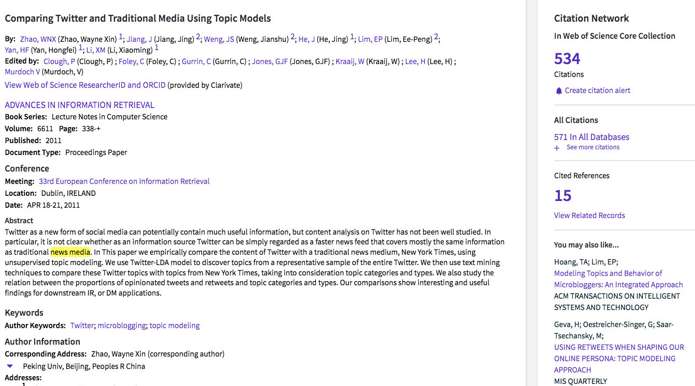
Извор: WOS, 2021
Нумеричке и текстуално-нумеричке базе података садрже материјале, као што су необрађени скупови података, истраживачки извештаји, берзанске котације, статистике и годишњи извештаји. Ове врсте база података могу се користити за задатке као што су економско предвиђање или истраживање тржишта (Fulton & McGuinness, 2016, стр. 126). Data Turkey је пример ове врсте базе података. Омогућава приступ економским, друштвеним, секторским и регионалним подацима које производе јавне институције и приватне организације у Турској.
Базе података наспрам Веба
Fulton & McGuinness (2016, стр. 127-128) извршили су поређење база података у односу на веб изворе на основу следећих тема:
Поузданост: Садржаји база података су првенствено ауторитативни, научни материјали које су најчешће рецензирани и одабрани од стране професионалаца. Веб извори омогућавају приступ информацијама/документима од којих многи нису верификовани или написани од стране квалификованих стручњака. Креатори докумената можда нису стручни или немају довољно знања о сродним темама.
Организација: Садржаји база података су добро организовани и користе стандардизоване предметне одреднице, дескрипторе и друга поља, као што су кључне речи, назив публикације, итд. Резултати претраге су много ефикаснији и прецизнији. Извори на вебу нису организовани на начин на који су базе података, па стога није лако доћи до свих могућих релевантних докумената.
Карактеристике претраге: Базе података нуде различите опције претраживања, као што су основне, напредне или експертске, као и друге функције, попут чувања и експортовања резултата претраге. Што се тиче Веба, функције претраге зависе од претраживача. Оне могу бити основне или напредне. Генерално, веб претраживачима недостаје софистицираност и флексибилност научних база података.
Покривеност: Базе података обезбеђују опсежну (детаљну) и широку покривеност тема. На Вебу, проналажење детаљних информација о научним темама је проблематично, због скривеног или deep web-а, којем претраживачи можда неће моћи да приступе.
Релевантност: Због специфичног садржаја и карактеристика претраживања које нуде базе података, могуће је преузимање релевантних докумената. На вебу се резултати рангирају према алгоритмима претраживача и њихово и филтрирање како би се идентификовали најрелевантнији документи, може представљати изазов.
Актуелност: Базе података се редовно ажурирају (нпр. дневно, недељно) и додају се нови документи, док код Веба нема редовних ажурирања.
Радови са конференција
Стручни радови се излажу на конференцијама, семинарима, симпозијумима и др. Радови или зборници радова са ових конференција, семинара или симпозијума се понекад објављују као посебна публикација, а некада као посебно издање часописа. Ови радови су важни, како би се информисали о најновијим достигнућима и напретку истраживања у различитим академским дисциплинама.
Пример зборника радова са конференције: Proceedings of ISSI 2015 Istanbul: 15th International Society of Scientometrics and Informetrics Conference, Истанбул, Турска, 29 јун - 4 јул, 2015.
Дисертације и тезе
Дисертације и тезе су формални, академски истраживачки радови, написани као услов за стицање одређеног степена на универзитету. Генерално, дисертације подносе студенти докторских студија, а тезе дипломирани студенти. (Li, 2014, стр. 105). Дисертације и тезе су главни извори примарних резултата истраживања.
Патентна литература
“Патент је ексклузивно право дато за проналазак, који је производ или процес који обезбеђује, уопштено гледано, нови начин да се нешто уради, или нуди ново техничко решење проблема.” (World Intellectual Property Organization [WIPO], 2021). Патентна литература је добро структуиран извор техничких и других информација. Патенти пружају информације које углавном нису доступне у чланцима из часописа или другим врстама извора. Патентна литература садржи детаље о новим проналасцима, новим производима/процесима или индустријским дизајнима којима су признати патенти (Chatterjee, 2017, стр. 25).
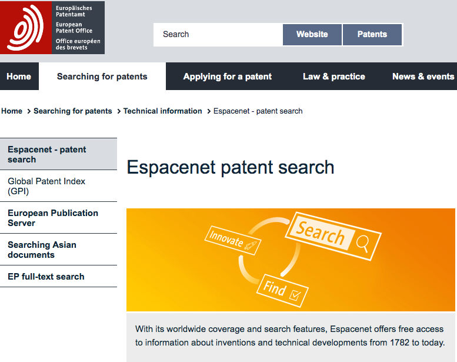
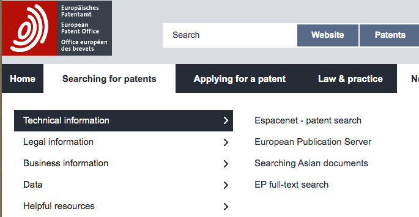
Извештаји
Извештај је “засебно издат запис о резултатима истраживања, истраживању у току или другим техничким студијама” (Levine-Clark & Carter, 2013, стр. 216).
Поједини извештаји су извештаји о напретку и израђују се из административних разлога; други извештаји се израђују о научним темама и укључују научне и техничке информације (Chatterjee, 2017, стр. 22-23). Технички извештаји описују и бележе проблеме, процесе и резултате са којима се сусрећу током научних истраживања, попут лабораторијских тестова и медицинских испитивања. Ови извештаји не пролазе формалну рецензију као други научни и технички радови, и зато се сматрају неформалним публикацијама. Они су, међутим, важни ресурси за праћење актуелних истраживачких трендова и техничких питања у различитим дисциплинама (Li, 2014, стр. 108).
Пример: Reuters Institute Digital News Report 2021
2021 Progress Report to Parliament - Report of the Climate Change Committee
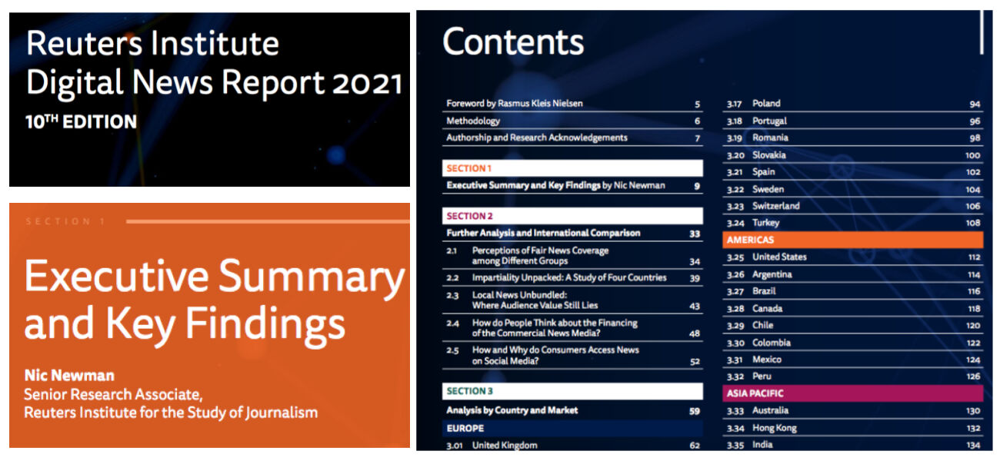
Стандарди
Стандарди “обезбеђују захтеве, спецификације, смернице или карактеристике које се могу доследно користити како би се осигурало да су материјали, производи, процеси и услуге одговарајући за своју намену” (International Organization for Standardization [ISO] CASCO, 2017, стр. 1). Стандард “може да се односи на прављење производа, управљање процесом, испоруку услуге или снабдевање материјлима” (International Organization for Standardization [ISO], 2021a).
Израђују их и националне и професионалне организације.
Пример: ISO 26000 ДРУШТВЕНА ОДГОВОРНОСТ: “Он пружа смернице онима који препознају да је поштовање друштва и животне средине кључни фактор успеха. Осим што је “права ствар” коју треба урадити, примена стандарда ISO 26000 се све више посматра као начин за процену посвећености организације одрживости и њеног укупног учинка” (International Organization for Standardization [ISO], 2021b).
Владина публикација
То је свака публикација која потиче, или је издата са ознаком, или о трошку и по овлашћењу било које службе легално организоване владе или међународне организације. Често се назива државним документом, јавним документом или документом (Levine-Clark & Carter, 2013, стр. 120-121).
Углавном се односе на законе, прописе и правила која покривају области као што су култура, бизнис, дипломатија, економија, национална одбрана, наука, технологија и трговина (Li, 2014, стр. 106).
Сива литература
Сива литература је “општи термин који се односи на публикације које се објављују и дистрибуирају ван главних токова. Обухвата материјале као што су технички извештаји, владине публикације и беле књиге” (Levine-Clark & Carter, 2013, стр. 121). Могу их производити влада, академске установе, предузећа и индустрије где издаваштво није примарна делатност продукционог тела (Schöpfel, 2010).
Статути/правилници, зелени папири, предлози, беле књиге, скупови података, материјали за курс, радни документи могу се навести као примери сиве литературе.
Институционални репозиторијуми
Институционални репозиторији су “дигиталне колекције које обухватају и чувају интелектуални рад једног универзитета или више институционалних заједница колеџа и универзитета” (Crow, 2002, стр. 5). Ови репозиторијуми обухватају различите врсте докумената као што су објављени материјали (после штампања), (preprints – припеме за штампу), радна документа, тезе и дисертације, истраживачки и технички извештаји, зборници радова са конференција, билтени одељења и истраживачких центара, радови који подржавају апликације за грантове, извештаје о статусу агенцијама за финансирање, извештае и меморандуме комитета, статистичке извештаје, техничку документацију и истраживања (Crow, 2002). Генерално, чланови институција (академско или административно особље) депонују своја документа у ове репозиторије.
Пример: DSpace@MIT
DSpace@MIT је дигитални репозиторијум за истраживања Масачусетског института за технологију и укључујуе рецензиране чланке, техничке извештаје, радне документе, тезе и још много тога.
Извори информација о вестима и новинарству
У претходним одељцима направљен је општи увод у изворе поузданих информација. У овом делу биће представљени примери неких поузданих извора који се односе на вести и новинарство.
Newspaper Source Plus
Ова база података омогућава приступ дигиталној колекцији најважнијих светских вести преузетих из главних извора и то у пуном тексту. Укључује милионе чланака (више од 88 милиона) из новина (више од 1.200), електронске новинске сервисе (енг. newswires) (више од 150) и часописа. Поред тога, нуди телевизијске и радио транскрипте (више од 2,1 милион) и стална дневна ажурирања из популарних извора вести.
Обухвата изворе као што су: AP (Associated Press), CNN Wire, PR Wire, UPI (United Press International), Xinhua (Кина).
Такође укључује транскрипте телевизијских и радијских вести из врхунских извора: ABC News (амерички), ABC (аустралијски), CBC (канадски), CBS News, CNBC, CNN, CNN International, FOX News, MSNBC, National Public Radio, PBS (EBSCO, 2021a).
NewsWires
Ова база података пружа приступ у скоро реалном времену врхунским светским вестима од Associated Press, United Press International, CNN Wire, и Business Wire на континуираној (редовној) бази. Ова колекција укључује AP Financial News, AP Top News, AP WorldStream, AP U.S. Politics & Government, AP 50 State Reports, UPI Business, UPI Entertainment, UPI Sports, UPI Top News и још много тога. (EBSCO, 2021b).
Regional Business News Plus
Ова база података пружа широку покривеност регионалним пословним публикацијама у пуном тексту из Сједињених Држава и канадских провинција. Укључује актуелне вести у пуном тексту из више од 920 новина и новинских сервиса (енг. newswires); више од 40 активних регионалних пословних публикација у пуном тексту ван отвореног приступа; и више од 2,2 милиона транскрипата ТВ и радио вести у пуном тексту (EBSCO, 2021c)
Web News
Сервис EBSCO's Web News омогућава приступ у скоро реалном времену хиљадама врхунских вести из целог света. Ова колекција обухвата преко 14.000 фидова који покривају низ пословних и општих тема (EBSCO, 2021d).
Data Turkey
Ова база података пружа податке о Турској у различитим друштвеним областима: националнa добит (нпр. бруто домаћи производ, општи биланс привреде), спољна трговина и платни биланс (нпр. извоз, увоз), цене, каматне стопе, девизни курсеви (нпр. нафта и цене злата, цене некретнина), секторска статистика (нпр. пољопривреда, наука и технологија), социјална статистика (нпр. становништво и демографија, образовање), јавне финансије (нпр. рачуни буџета, токови готовине), регионална статистика (нпр. социјална статистика), архиви и други скупови података (нпр. цене, тржиште рада) (dataTurkey, 2021).
HukukTürk - Kazancı Hukuk - Lexpera
Ове базе података пружају приступ у пуном тексту судској пракси Касационог суда, Државног савета, Уставног суда, Суда за спорове о надлежностима, Европског суда за људска права у Турској, законодавству Турске, Службеном гласнику Републике Турске и другој литератури као што су књиге, чланци о праву (HukukTürk, 2021; Kazancı Hukuk, 2021; Lexpera, 2021).
HeinOnline
HeinOnline омогућава приступ више од 3.000 научних часописа који истражују више од хиљаду тема. Покрива: савезни садржај САД (нпр. Конгресна документа САД, Закон о имиграцији и политици САД), државни садржај САД (нпр. грађанска права и социјална правда, државни извештаји), судску праксу (Извештаји Врховног суда Канаде, Преглед случајева Врховног суда Сједињених Држава), посебне збирке (стручни речници из области права, документа Пентагона), међународне изворе (Историја међународног права, Право у источној Европи) (HeinOnline, 2021).
Data Planet
Data Planet омогућава лак приступ статистичким подацима. Преко 13,5 милијарди скупова података у Data Planet омогућава тренутни приступ подацима, путем више тачака уноса, представљених на графиконима, мапама, дијаграмима и табелама. Подаци потичу из више од 90 извора, укључујући Биро за економске анализе, Биро за статистику рада, Центре за контролу и превенцију болести, Кинески институт за податке, Deutsche Borse Group, Европску комисију, Светску банку и друге. Теме обухваћене подацима укључују економију, криминал, здравље, становништво, енергију, животну средину, владу и политику и још много тога (Data Planet, 2021).
AP Archive
AP Archive је филмска и видео архива агенције Асошијетед прес (АП). Нуди преко 1,7 милиона глобалних вести и забавних видео прича које датирају још из 1895. године, а које потичу како из АП-овог сопственог извештавања, тако и од других партнера ове агенције (нпр. ABC News, RTL Germany) (AP Archive, 2021).
ProQuest Historical Newspapers
ProQuest Historical Newspapers је дигитална архива новина и садржи више од 100 милиона дигитализованих страница. Укључује странице историјских новина, чланке, фотографије, рекламе, мале огласе, читуље, уредничке карикатуре и још много тога (ProQuest Historical Newspapers, 2021).
Dow Jones Factiva
Dow Jones Factiva је актуелна међународна база вести коју производи Дау Џонс (Dow Jones). Комбинује преко 30.000 извора из 200 земаља, на 28 језика, што укључује Дау Џонсов скуп поузданих пословних и финансијских публикација: The Wall Street Journal, Dow Jones Newswires, Barron’s and MarketWatch. Нуди широк спектар информација из новина, новинских сервиса, индустријских публикација, веб-сајтова, извештаја компанија и још много тога. Широк спектар садржаја пружа како локални увид, тако и глобалну перспективу о пословним питањима и актуелним догађајима - посебно у погледу истраживања која захтевају актуелне информације о компанијама, индустријама и финансијским тржиштима (Factiva, 2021).
Eurostat
Eurostat је статистички завод Европске уније. Пружа статистику и податке о Европи и производи европску статистику у партнерству са националним статистичким институтима и другим националним органима из земаља чланица ЕУ. Укључује и статистичке органе земаља Европске економске зоне и Швајцарске (eurostat, 2021).
The World Bank (Светска банка)
Светска банка обезбеђује слободан и отворен приступ подацима о глобалном развоју. Нуди различите ресурсе који садрже податке о бројним темама: Банка података, Библиотека микроподатака, Статистика међународног дуга, Глобална база података о потрошњи, Пројекти и операције, Отворене финансије, Индикатори светског развоја (The World Bank, 2021).
Veri Kaynağı
Veri Kaynağı је пројекат асоцијације İzlemedeyiz (у преводу: ми гледамо), који прикупља социо-економске податке о Турској из званичних извора отворених за јавност, и чини их доступним свим сегментима друштва. Циљ студије, која се објављује на веб-сајту verikaynagi.com и каналима друштвених медија, је да допринесе ширењу окружења за дискусију заснованог на подацима и да подигне свест о приступу отвореним подацима (Veri Kaynağı, 2021).
Новинске агенције
Према дефиницији, “новинска агенција, која се такође назива и агенција за штампу, удружење за штампу, телевизијска служба или новинска служба, је организација која прикупља, пише и дистрибуира вести из целе нације или света новинама, периодичним листовима, радио и телевизијским станицама, владиним агенцијама и другим корисницима” (Britannica, 2015).
Као примере новинских агенција можемо навести: Anadolu Agency; Agence France-Presse; Associated Press; Press Trust of India; Reuters; TASS; United Press International.
Новинске архиве
Као примере новинских архива можемо навести: British Newspaper Archive; Gale Historical Newspapers; Google News Archive; Welsh Newspapers Online.
Интернет архива
Интернет архива је непрофитна библиотека са милионима бесплатних књига, филмова, софтвера, музике, веб-сајтова и још много тога. Преко Wayback Machine. доступно је више од 25 година веб историје. Њена архива садржи: 588 милијарди веб страница, 28 милиона књига и текстова, 14 милиона аудио снимака (укључујући 220.000 концерата уживо), 6 милиона видео-записа (укључујући 2 милиона телевизијских вести), 3,5 милиона слика и 580.000 софтверских програма (Internet Archive, 2021).
Вежбање
- Користите базу података Newspaper Source Plus да бисте одговорили на следећа питања. Прво извршите претрагу која укључује речи “лажне вести” (енг. “fake news”) у наслову чланка.
- Колико сте чланака нашли?
- Који је тип извора резултата? (нпр. новине, новински сервиси, транскрипти радио и ТВ вести, америчке новине)
- Како се зову публикације? (нпр. Daily Mail, Hindustan Times, Filipino Post)
- Колико је чланака објављено у Вашингтон посту, односно у Гардијану?
- Направите исте претраге на Вебу и упоредите резултате.
- Изаберите одређену тему (нпр. грађанско новинарство) и наведите пример следећих извора:
-
- речник који садржи дефиницију теме
- енциклопедијски чланак у вези са темом
- извештај у вези са темом
- књига која се односи на тему
- чланак из научног часописа
Квиз
Референце
ACRL RBMS-SAA Joint Task Force. (2018). Guidelines for Primary Source Literacy. Retrieved from https://www.ala.org/acrl/sites/ala.org.acrl/files/content/standards/Primary%20Source%20Literacy2018.pdf
AP Archive (2021). Retrieved from http://www.aparchive.com/
Bell, S.S. (2015). Librarian's guide to online searching: Cultivating database skills for research and instruction (4th ed.). Santa Barbara, California: Libraries Unlimited.
Britannica, T. Editors of Encyclopaedia (2015, August 28). news agency. Encyclopedia Britannica. https://www.britannica.com/topic/news-agency
Chatterjee, A. (2017). Elements of Information Organization and Dissemination (Ser. Chandos Information Professional Series). Cambridge, MA: Chandos Publishing.
Crow, R. (2002). SPARC Institutional Repository Checklist & Resource Guide. Scholarly Publishing & Academic Resources Coalition. Retrieved from https://sparcopen.org/wp-content/uploads/2016/01/IR_Guide__Checklist_v1_0.pdf
DataPlanet. (2021). Retrieved from https://dataplanet.sagepub.com/
dataTurkey. (2021). Retrieved from https://datatr.net/main_tr
EBSCO. (2021a). Newspaper Source Plus. Retrieved from https://www.ebsco.com/products/research-databases/newspaper-source-plus
EBSCO. (2021b). Newswires. Retrieved from https://web.b.ebscohost.com/ehost/search/selectdb?vid=1&sid=648e640c-745e-4c02-bc17-700a0c1cb505%40sessionmgr102
EBSCO. (2021c). Regional Business News Plus. Retrieved from https://www.ebsco.com/products/research-databases/regional-business-news-plus
EBSCO. (2021d). Web News. Retrieved from
eurostat. (2021). Retrieved from https://ec.europa.eu/eurostat/
Factiva. (2021). Retrieved from https://about.proquest.com/en/products-services/factiva
Fulton, C., & McGuinness, C. (2016). Digital Detectives: Solving Information Dilemmas in an Online World (1st ed.). Chandos Publishing.
HeinOnline. (2021). Retrieved from https://heinonline.org/HOL/Welcome
HukukTürk. (2021). Retrieved from https://www.hukukturk.com/en
International Organization for Standardization [ISO]. (2021a). Standards. Retrieved from https://www.iso.org/standards.html
International Organization for Standardization [ISO]. (2021b). Popular Standards: ISO 26000. Retrieved from https://www.iso.org/iso-26000-social-responsibility.html
International Organization for Standardization [ISO] CASCO. (2017). An opportunity for collaboration: Standards, conformity assessment, accreditation and insurance. Retrieved from https://www.iso.org/files/live/sites/isoorg/files/store/en/PUB100420.pdf
Internet Archive. (2021). Retrieved from https://archive.org/
Kazancı Hukuk. (2021). Retrieved from https://www.kazancihukuk.com/
Lanning, S. (2012). Concise Guide to Information Literacy. Santa Barbara, California : Libraries Unlimited.
Levine-Clark, M., & Carter, T. M. (2013). ALA glossary of library and information science. (Fourth edition / edited by Michael Levine-Clark and Toni M. Carter.). ALA editions, an imprint of the American Library Association.
Lexpera. (2021). Retrieved from https://www.lexpera.com.tr/
Li, L. (2014). Scholarly Information Discovery in the Networked Academic Learning Environment (Ser. Chandos Information Professional Series). Oxfordshire [England]: Chandos Publishing.
Markey, K. (2019). Online searching: A guide to finding quality information efficiently and effectively (2nd ed.). Lanham, Maryland: Rowman & Littlefield.
ProQuest Historical Newspapers. (2021). Retrieved from https://about.proquest.com/en/products-services/pq-hist-news/
Schöpfel, J. (2010). Towards a Prague Definition of Grey Literature. Twelfth International Conference on Grey Literature: Transparency in Grey Literature. Grey Tech Approaches to High Tech Issues. Prague, 6-7 December 2010, Dec 2010, Czech Republic. Pp.11-26. Retrieved from https://archivesic.ccsd.cnrs.fr/sic_00581570/document
The World Bank. (2021). Retrieved from https://data.worldbank.org/
Veri Kaynağı. (2021). Retrieved from https://www.verikaynagi.com/
Welsh, T.S., & Wright, M.S. (2010). Information literacy in the digital age: An evidence-based approach. Oxford, U.K.: Chandos.
World Intellectual Property Organization [WIPO]. (2021). Patents. Retrieved from https://www.wipo.int/patents/en/
Препоручени извори
Mann, T. (2015). The Oxford Guide to Library Research (4th ed.). Oxford University Press.
Wong, M.A., & Saunders, L. (Eds.). (2020). Reference and Information Services: An Introduction (6th ed.). Santa Barbara, California : Libraries Unlimited.
Препоручени видео-записи
Imagine Easy Solutions. Understanding Primary & Secondary Sources
CSUN University Library. Types of Information Sources